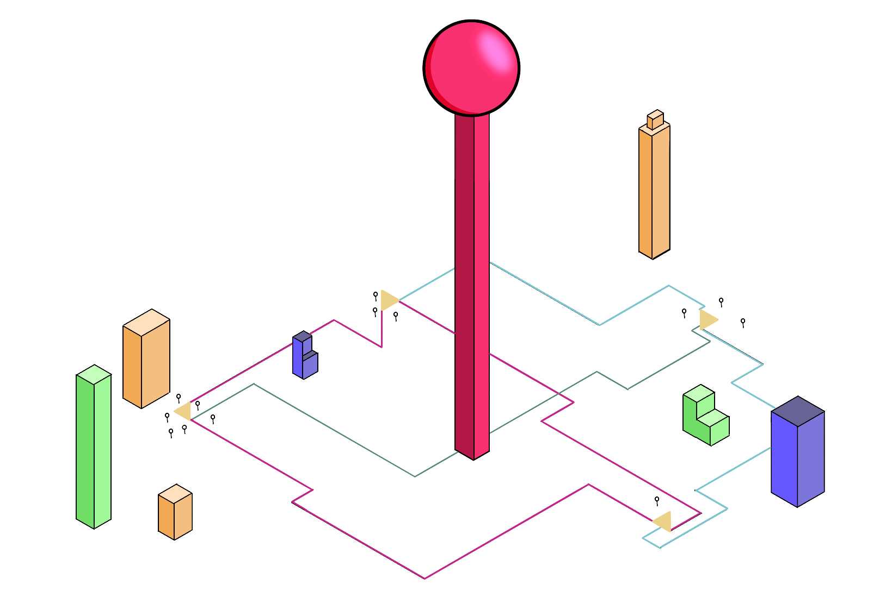
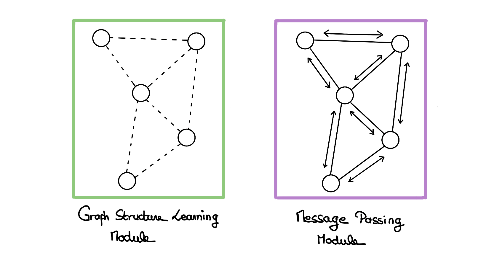
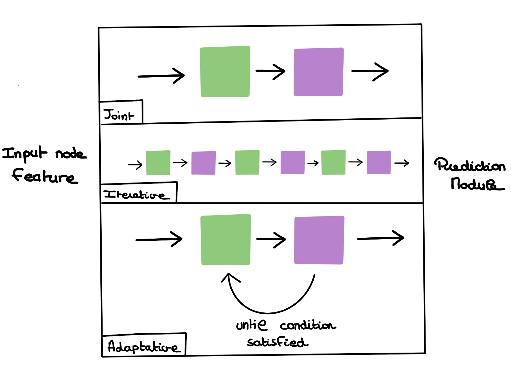
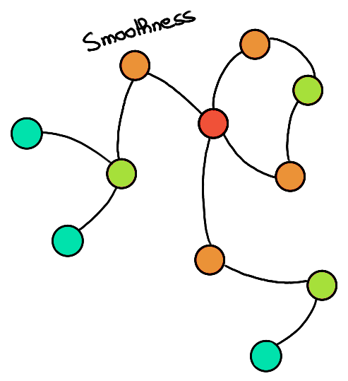
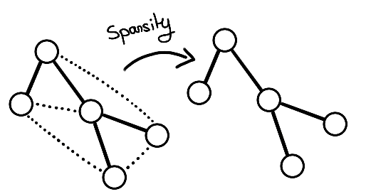
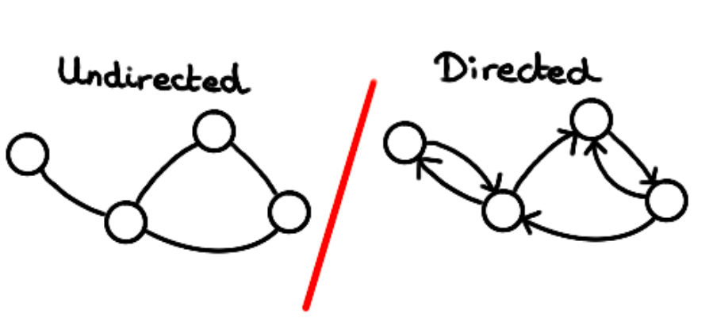
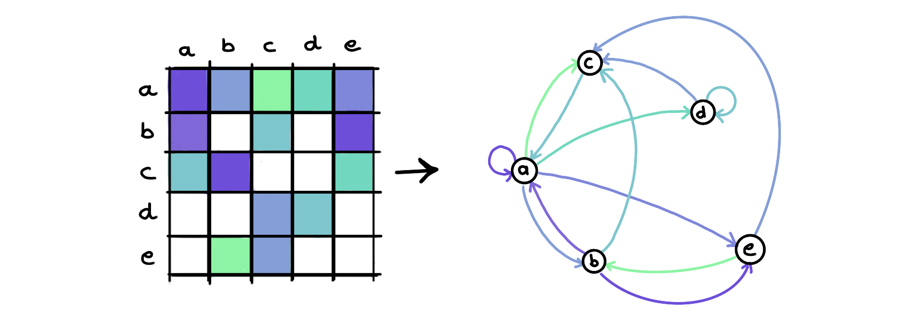
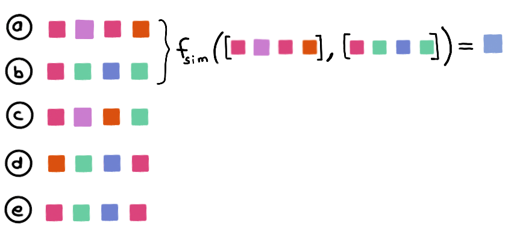

Graph Structure Learning
Introduction
You are at the top of a tower overlooking the city and watch people come and go like a colony of ants. Some are running into subway stations, and some are running out of them. As the day progresses, you see patterns that govern the number of people coming and going at different stations, at different times. Your almost pathological love of Machine Learning tells you that it would certainly be possible to predict this pattern. You think of your friend Michael, a strong advocate of graphs, and you remark that the use of Graph Neural Networks would be perfectly relevant in this case! The metro network is obviously at the heart of this dynamic. However, you don't have the map in front of you. How to take advantage of this technology?

In this article, we will focus on Graph Structure Learning, a joint learning technique of the graph: the subway network, and the prediction object: the number of passengers at each station.
More generally, this technique allows the use of graph-based methods on data for which the existence of an underlying graph is suspected, but for which the available graph is noisy, partially or completely unknown.
The methods thus made available by the acquisition of a graph range from spectral techniques to the more recent use of Graph Neural Networks. The latter has been illustrated in recent years on different problems such as social network data (Fan et al., 2019), recommendations (Wu et al., 2022), or spatial analysis (Derrow-Pinion et al., 2021).
The purpose of this article is to illustrate the usefulness of such a method and to explain the different approaches succinctly. We will take as an example the prediction of traffic on a fictitious subway network.
Motivation
Performance
The main interest of such a method is above all to improve the performance of a model. This is done by adding an inductive bias that characterizes the problem as a graph problem. The performance is then improved by learning or refining this graph, helping the model to structure the inputs in a way that is adapted to the solution of the problem.
Explainability
Another reason to use such a module would be to be able to better understand the environment in which we work. Indeed, graphs allow a clear visualization and are anchored in the reality of the problem on which we can project ourselves to make the analysis.
In our example, it could allow us to reveal the subway network until now hidden to the observer. This is also the idea behind Graph WaveNet (Wu et al., 2019).
However, it should be noted that as the neural network grows in size, the underlying graph used by it may be distinct from the graph a human would tend to read things from.
E.g. Even though the performance of the network is improved in the presence of the graph, the MTGNN model (Wu et al., 2020) hardly produces a human-readable graph.
In this case, we can talk about explainability and not only interpretability, since we are talking about the analysis of the neural network itself and the way it has modeled the problem.
Adversarial
Finally, it is also possible to use this mechanism as a protection against graph traffickers. Indeed, as for any type of data, it is possible to knowingly alter the prediction of a network to take advantage of it. This can be the case for example for a recommendation engine for which one would like to bias the prediction in favor or against a particular product. Graph Structure Learning can then rectify this graph, correcting in particular the inappropriate edges. This is what (Jin et al., 2020) call Graph Purification.
Implementations
Paradigms
There are different ways to use an SLM module within a neural network architecture.

1) Joint paradigm
A simple solution in which a single GSL block is used, followed by the rest of the GNN.
2) Adaptive paradigm
A solution in which a succession of GSL-GNN blocks is used. This is for example the case with the MTGNN architecture (Wu et al., 2020).
3) Iterative paradigm
A solution that resembles the previous one, but that does not stipulate a fixed number of blocks but rather a condition from which we stop applying this block in a loop (Chen et al., 2020).

Constraints on the graph
When learning a graph, we will often want to constrain it to respect the attributes that graphs in general include.
There are two ways to enforce these constraints: regularization (by altering the loss function) and architectural constraint (by altering the neural network itself).
We will focus on the most frequently used attributes, but there are others.
Constraints by regularization
With regularization techniques, we alter the loss function to orient the learning of the graph:
In particular, we can enforce various constraints mentioned by (Kalofolias, 2016).
- Smoothness: In a homophily context (connected nodes are similar), we want to make sure that connected nodes have a close representation.
Conversely, we could place ourselves in a heterophily context where we want the connected nodes to have distant embeddings.

- Sparsity: In reality, graphs are sparse, i.e. each node has only a few neighbors relative to the total number of nodes in the graph. To proceed, we can penalize the \(l_0\) norm of the learned \(A\)-adjacency matrix:

- Connectivity: We will also want to obtain a connected graph most of the time. For this we can rely on the rank of the adjacency matrix: the lower the rank, the more densely connected the graph is:
- Degree positivity: A trivial solution to these equations being a null matrix, we can emphasize the importance of having a positive degree for each node by using the following formula:
Architectural constraints
- Directivity: We can impose or not that the graph is directed. That is to say, allow \(A_{ij} \neq A_{ji}\). For this, the matrix must be non-symmetric. So, in the context of node embeddings, we want to have a distance \(d(X_i, X_j)\) which is not symmetric for a directed graph, and symmetric for an undirected graph. The MTGNN architecture (Wu et al., 2020) proposes for example learning two embeddings per node to differentiate one direction or the other of an edge.

-
Positivity: We may wish to guarantee the positivity of the edges of the graph, for that it is possible to nullify the negative values: \(A' = ReLU(A)\), or to make them positive \(A' = exp(A)\).
-
Sparsity: This is another method to ensure sparsity. Here, we can also use the function \(ReLU\) to nullify the values below a certain threshold and thus ensure a \(\epsilon-graph\). Another way to do this is to use a \(kNN\) graph and choose the highest values in the adjacency matrix.
-
Discretization: We can wish that the edges of the graph are binary or not. If this is the case, we can use sampling or RL methods to ensure this. It is simpler and often preferable however to stick to weighted graphs, which offer more flexibility and easier learning methods because they are more easily differentiable.
Architecture
There are three notable architectures for learning a graph. All these architectures lead to the computation of an adjacency matrix, but do it differently.
- Direct optimization
In this architecture, we will directly optimize the adjacency matrix \(A\), as a free parameter. This is for example the case with the GLNN architecture (Gao et al., 2019).

- Metric-based approaches
This approach uses a distance metric to estimate the edge weight between two nodes from the two embeddings of these nodes. This allows the addition of new nodes if the embeddings of the nodes contain sufficient information to do so.
For example, a classical metric like cosine similarity(Nguyen & Bai, 2011) can be used:
with \(w\) a trainable parameter. This is the case for example for the IDGL architecture (Chen et al., 2020).

Some more complex methods can also replace classical metrics. One thinks for instance of attention mechanisms (Veličković et al., 2018).
A last approach, structure-aware learning, additionally considers the attributes of the edge between the two nodes to establish the weight of the latter.
Conclusion
Graph Structure Learning methods are an excellent way to enable the use of graph methods that recent successes make attractive, by correcting or learning the structure to work on.
In this article, we have given a first overview of these techniques: the reasons why they are used, how they are incorporated into a DNN network, their architecture, and the constraints they impose on the learned graph.
This is a very active area of research and the points discussed here are far from exhaustive.
This paper is based on the overviews of (Zhu et al., 2022) and (Chen, Yu, and Wu, Lingfei, 2022).
We will experiment with a simple SLM method in a future paper.
Bibliography
Chen, Y., Wu, L., & Zaki, M. J. (2020). Iterative Deep Graph Learning for Graph Neural Networks : Better and Robust Node Embeddings (arXiv:2006.13009). arXiv. https://doi.org/10.48550/arXiv.2006.13009
Derrow-Pinion, A., She, J., Wong, D., Lange, O., Hester, T., Perez, L., Nunkesser, M., Lee, S., Guo, X., Wiltshire, B., Battaglia, P. W., Gupta, V., Li, A., Xu, Z., Sanchez-Gonzalez, A., Li, Y., & Veličković, P. (2021). ETA Prediction with Graph Neural Networks in Google Maps. Proceedings of the 30th ACM International Conference on Information & Knowledge Management, 3767‑3776. https://doi.org/10.1145/3459637.3481916
Fan, W., Ma, Y., Li, Q., He, Y., Zhao, E., Tang, J., & Yin, D. (2019). Graph Neural Networks for Social Recommendation. The World Wide Web Conference, 417‑426. https://doi.org/10.1145/3308558.3313488
Gao, X., Hu, W., & Guo, Z. (2019). Exploring Structure-Adaptive Graph Learning for Robust Semi-Supervised Classification (arXiv:1904.10146). arXiv. https://doi.org/10.48550/arXiv.1904.10146
GNNBook@2023 : Graph Neural Networks : Graph Structure Learning. (s. d.). Consulté 10 avril 2023, à l’adresse https://graph-neural-networks.github.io/gnnbook_Chapter14.html
Jin, W., Li, Y., Xu, H., Wang, Y., Ji, S., Aggarwal, C., & Tang, J. (2020). Adversarial Attacks and Defenses on Graphs : A Review, A Tool and Empirical Studies (arXiv:2003.00653). arXiv. https://doi.org/10.48550/arXiv.2003.00653
Kalofolias, V. (2016). How to learn a graph from smooth signals (arXiv:1601.02513). arXiv. https://doi.org/10.48550/arXiv.1601.02513
Nguyen, H. V., & Bai, L. (2011). Cosine Similarity Metric Learning for Face Verification. In R. Kimmel, R. Klette, & A. Sugimoto (Éds.), Computer Vision – ACCV 2010 (p. 709‑720). Springer. https://doi.org/10.1007/978-3-642-19309-5_55
Veličković, P., Cucurull, G., Casanova, A., Romero, A., Liò, P., & Bengio, Y. (2018). Graph Attention Networks (arXiv:1710.10903). arXiv. https://doi.org/10.48550/arXiv.1710.10903
Wu, S., Sun, F., Zhang, W., Xie, X., & Cui, B. (2022). Graph Neural Networks in Recommender Systems : A Survey (arXiv:2011.02260). arXiv. https://doi.org/10.48550/arXiv.2011.02260
Wu, Z., Pan, S., Long, G., Jiang, J., Chang, X., & Zhang, C. (2020). Connecting the Dots : Multivariate Time Series Forecasting with Graph Neural Networks (arXiv:2005.11650). arXiv. https://doi.org/10.48550/arXiv.2005.11650
Zhu, Y., Xu, W., Zhang, J., Du, Y., Zhang, J., Liu, Q., Yang, C., & Wu, S. (2022). A Survey on Graph Structure Learning : Progress and Opportunities (arXiv:2103.03036). arXiv. https://doi.org/10.48550/arXiv.2103.03036
Wu, Z., Pan, S., Long, G., Jiang, J., & Zhang, C. (2019). Graph WaveNet for Deep Spatial-Temporal Graph Modeling (arXiv:1906.00121). arXiv. https://doi.org/10.48550/arXiv.1906.00121